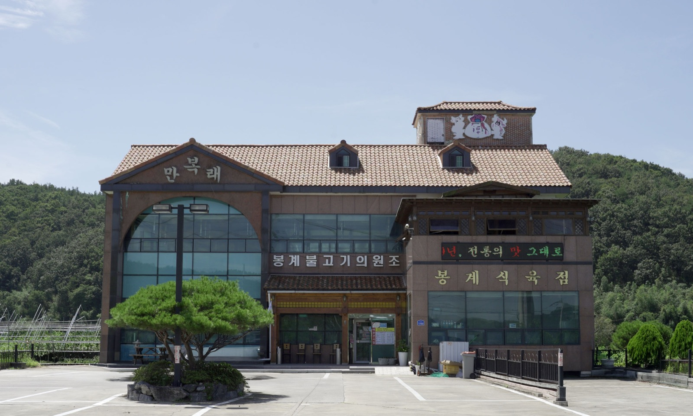
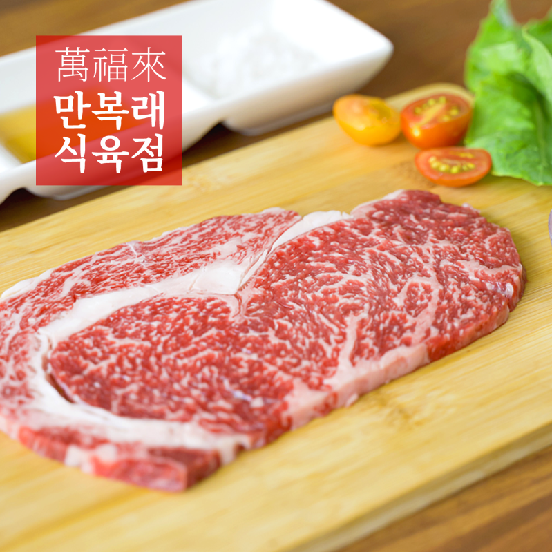
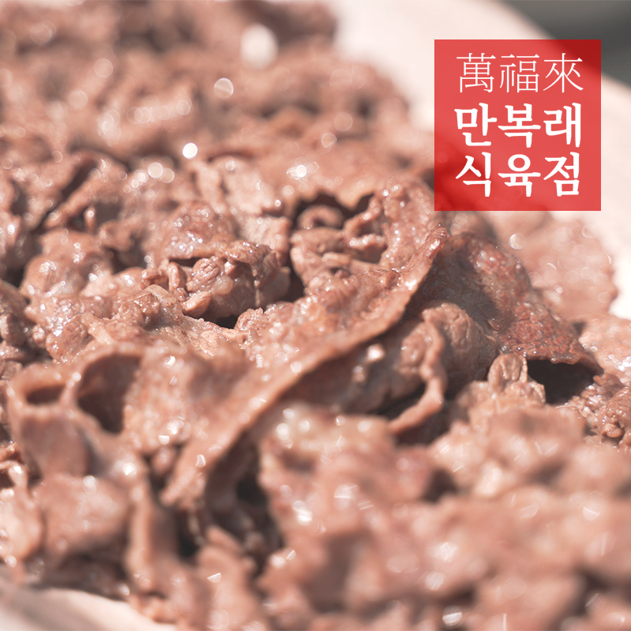
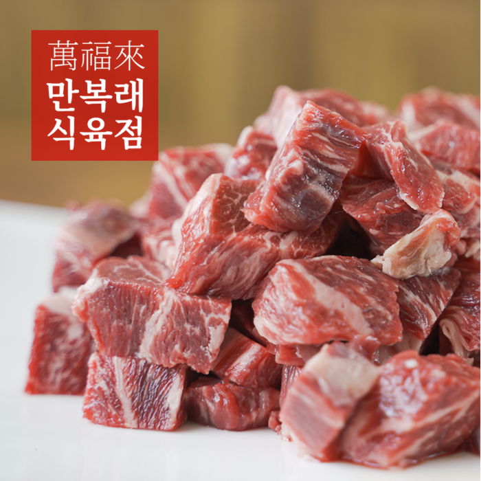
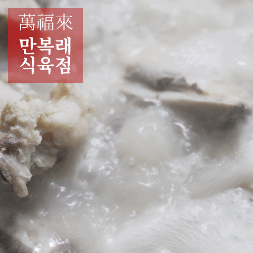
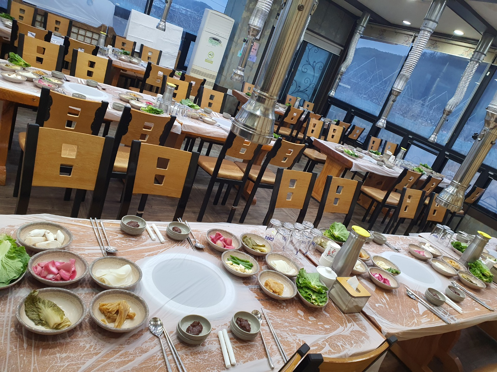
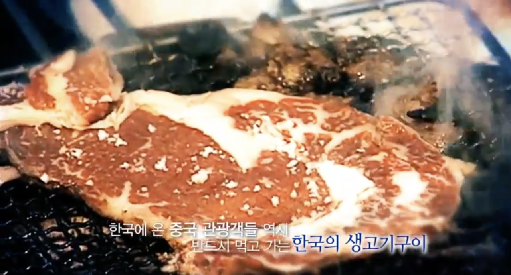
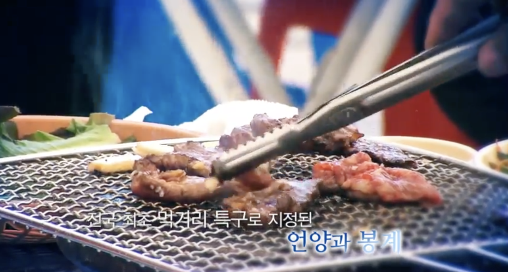
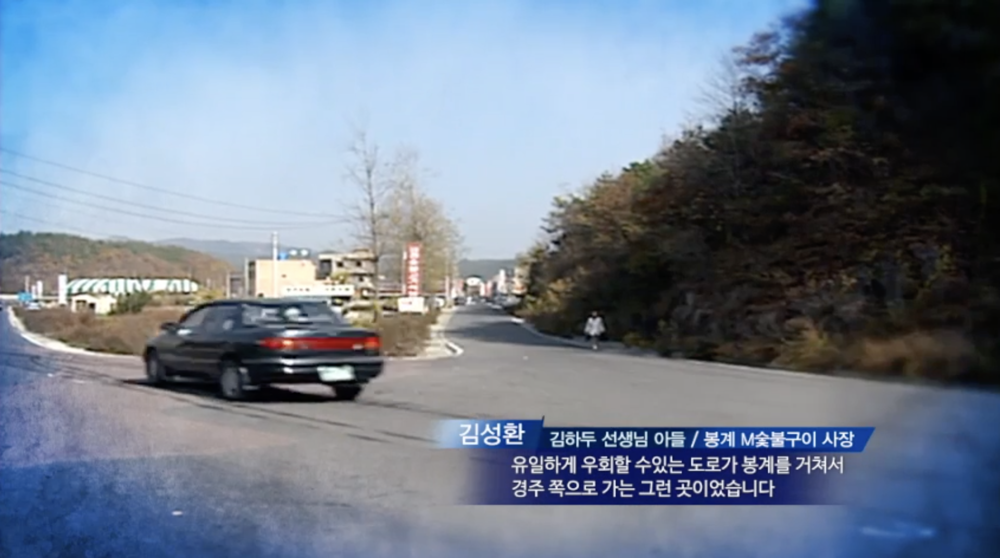
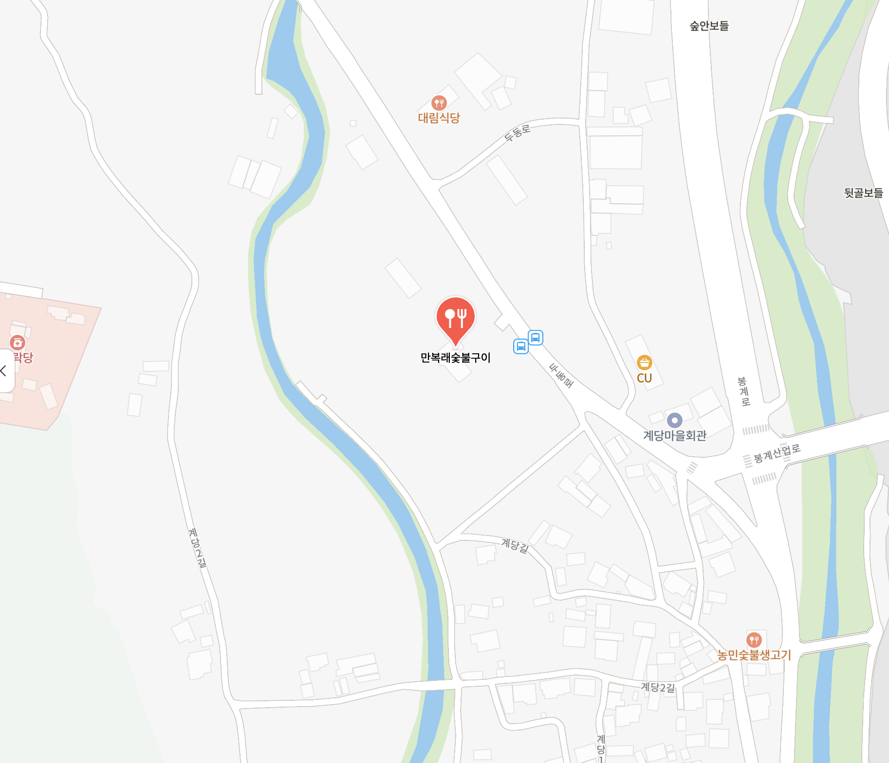

만복래
1983년, 봉계 불고기단지의 시작.
한우 암소를 굵은 소금으로 간해 숯불에 굽습니다.
- 자리
- 울산 울주군 두동면 봉계리
- 예약·문의
- 052-262-7255
- 택배
- 전화 주문

내력
봉계 한우단지가 있는 곳은 일제시대부터 존재하던 우시장이었습니다. 더불어 두동 활천리에서 모양 좋은 수석(水石)이 많이 나와 입소문이 났고, 전국의 수석 채집가들이 봉계를 자주 찾았습니다.
집안 대대로 봉계에서 집성촌을 이루어 살던 '김하두' 할아버지도 수석 채집을 즐겨 다녔습니다. 채집길에 마주치던 사람들이 하나같이 "제대로 식사할 곳이 없다"고 동네 사람인 할아버지에게 불평하자, 1983년 봉계시장 근처 초가집 안에 숯불을 피우고 돼지고기, 소고기에 왕소금을 뿌려 밥을 내는 식당을 차렸습니다. 그 이름이 '금성식육점', 지금의 만복래 숯불구이입니다.
품질 좋은 소고기, 왕소금, 육회, 된장찌개 — 이 조합의 맛이 기가 막혀 손님들의 입소문으로 널리 퍼졌습니다. 90년대 들어 도로가 포장되고 교통이 좋아지면서 울주군의 축산업을 살린 식당들이 하나둘 들어섰고, 지금의 봉계 불고기단지로 이어졌습니다.
2006년 9월, 봉계는 재정경제부 지정 전국 유일의 봉계불고기단지특구(제2006-33호)가 되었습니다. 봉계·언양 지역 사람들이 서로 돕고 격려하며 함께 일군 성과입니다.
메뉴는 지금도 그때와 똑같습니다. 왕소금구이, 양념불고기, 육회, 된장찌개. 이제는 2대를 넘어 3대가 함께 찾아오시는 손님들과 저희는 살아갑니다.
더 자세한 이야기와 옛 사진·방송 자료가 궁금하다면 만복래 역사 이야기 (네이버 블로그)를 방문해 주세요.
상차림
식육점
만복래식육점에서 산지 한우를 부위별로 준비합니다. 매장에서 직접 사 가시거나, 전화로 택배 주문할 수 있습니다.




만복래 풍경



쌈채소는 밭에서 직접 길러 냅니다. 더 많은 사진은 네이버 블로그에서.
옛 방송 속 만복래



오시는 길
주소
울산광역시 울주군 두동면 두동로 1789 (봉계리)
자가용
경주에서 35번 국도를 타고 오시면 됩니다. 봉계 한우불고기특구 초입입니다.
대중교통
- KTX 울산역 — 313번 시내버스, 봉계 하차
- 울산 시내(태화강역) — 763번 시내버스, 봉계 하차
- 경주시외버스터미널 — 500번 좌석버스, 종점 봉계 하차
- KTX 경주역 — 경주시외버스터미널로 이동 후 500번 환승
운행 시간은 지도 앱에서 확인해 주세요.
